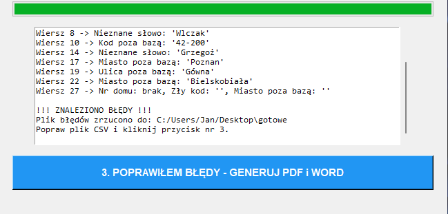
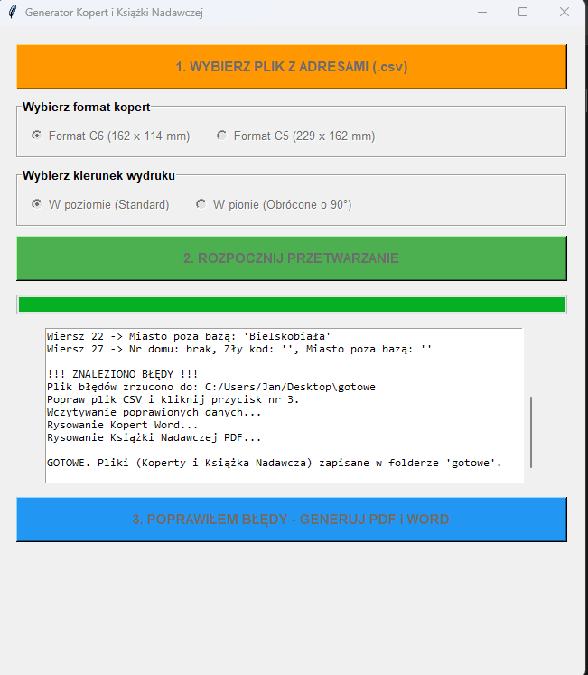
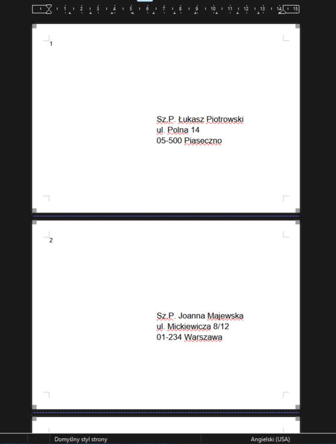
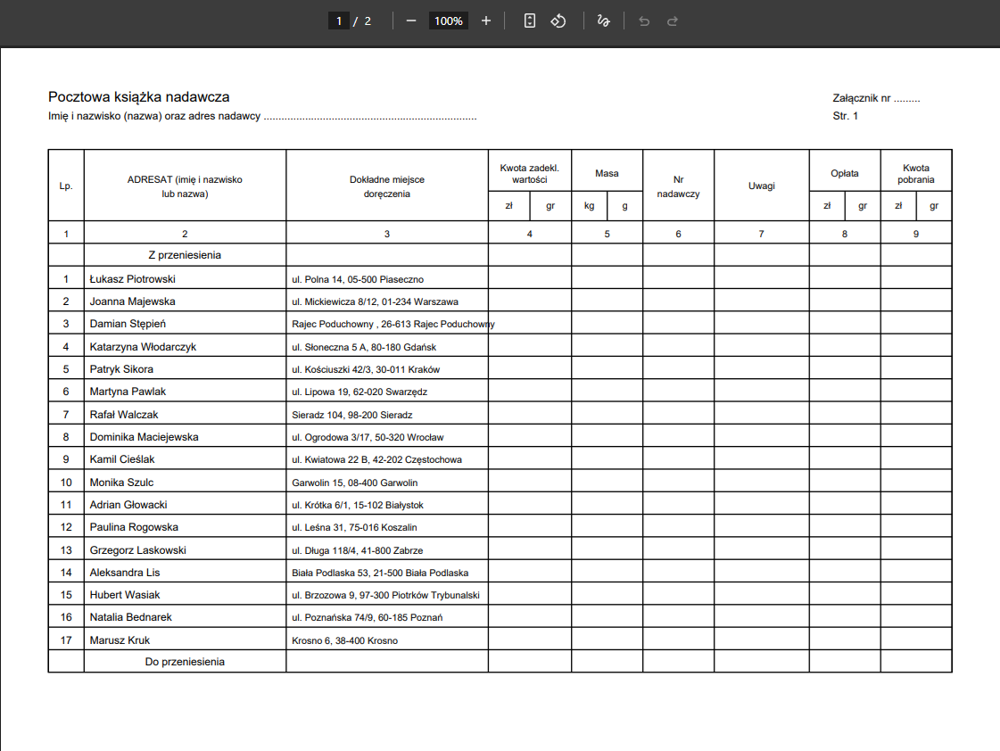

Bulk Mail Merge & Dispatch Register Generator
A standalone desktop application (.exe) automating the dispatch of bulk mailings. It replaces hours of manual data entry from raw CSV spreadsheets, generating print-ready postal packages in just a few minutes.
1. Unstructured Input Data
A raw CSV file containing the recipient list. It includes typical errors that prevent automated dispatch: typos in city names, missing house numbers, malformed postal codes, and inconsistent data formatting.

2. Dictionary Validation & Exception Queue
The program verifies addresses against reference databases (e.g., TERYT). Correct records are processed in the background, while ambiguous entries are routed to a separate CSV exception report detailing the specific error (e.g., unknown postal code, invalid street name). This isolates issues without interrupting the entire workflow. The program never attempts to auto-correct data on its own, preventing the introduction of new errors.


3. Post-Correction Merge
After a quick manual correction of only the faulty entries in the auxiliary file, the tool merges the corrected data with the main database and immediately proceeds to generate the document packages.

4. Final Production Packages
As output, the program generates personalized envelope templates in .docx format (ready for printing in the selected layout) and a complete dispatch register in PDF format, fully compliant with official post standards.

